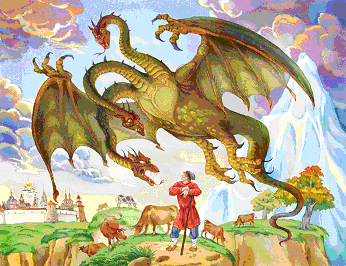

Русская сказка - Ведическое пособие мудрости жизни Предков
Существующие ведические писания славян, которые имеют глубокие исторические корни, восходящие к старой Славяно-Арийской эпохе. Это огромнейший пласт высокой культуры наших Предков, где в их наследии большое значение имеют сказки. Ведь, что такое сказка? Это народная мудрость, передаваемая из поколения в поколение, накопленная опытом, и в этом понятии нам поможет могучий Русский Язык, который является ключом к древним забытым знаниям, и только через него можно понять саму суть величия всего мироздания. Сказка (по древнему Славяно-Арийскому словарю) – сказ, наказ, указ Великого Бога Рода, в которых переданы Его заповеди и раскрыты ключи счастливой гармоничной жизни человека с природой, духовности народа, его сохранение и процветание. Эти корни дают прикоснуться к истинному знанию об очень богатой летописи прекрасных традиций и самобытной неповторимой культуре. Задача сказок проста и сложна одновременно: вспомнить забытое, сохранив главную истину. Из века в век переходили сказания, и дошли до наших дней, с образами определённых героев. Но как сохранили в себе они передаваемые знания? Многие образы исказились и стали себе противоположны, т.е. растерялась, растворилась правда, дающая расцвет обществу ныне живущему. Результат всему: деградация нации, пьянство и наркомания, падение духовности и нравственности, болезни и распад многих личностей. А сказки – это и есть духовный родовой энергетический потенциал народа. Нынешние положительные сказочные образы можно сравнить с крошечными жемчужинами рассыпанных из драгоценного ожерелья, потерянного во времени.
Для того, чтобы информация доходила до народа, Славяно-Арийские Жрецы все свои древние мудрости, или как сейчас говорят: сакрально - Ведические знания, отдавали в народ в виде сказок, где информация была перестроена для образного восприятия. Сказки передавались слово в слово для того, чтобы информация передавалась без искажения. То, что русо-арийские народы узнавали с детского возраста из сказок - это вся была древняя правдивая информация, с помощью которой ребенок обучался познавать окружающий мир. Сказы, были, былины, небылицы, поговорки, пословицы и т.п. - всё это древняя Мудрость всех Славяно-Арийских народов.
Слово Быль произошло от древнесловенского глагола - "быти", то есть то, что было и происходило в Мире Яви. Небылица (небыль) - то, что не было в Яви, но происходило в Мирах: Нави, Слави или Прави, то есть в другой форме бытия.
Все сказы не воспринимались как быль только материалистами, т.е. жителями, находящимися на троичной ступени развития (единождыживущие) - это люди, потерявшие связь со своим Родом, и переставшие воспринимать Мудрость Предков.
В конце каждой сказки была поговорка: "Сказка ложь, да в ней Намёк, кто познает - тем Урок". Позднее христиане эту поговорку исказили: "Сказка ложь, да в ней намёк, добрым молодцам - урок". Почему же только добрым молодцам, разве красным девицам не нужно познавать свой Рок, свою судьбу? Это было сделано в связи с тем, что по христианскому учению женщина - это отрицательный элемент, в отличие от славянской традиции, где женщина олицетворяла Богиню - хранительницу домашнего очага. Кроме того, были искажены такие понятия как Ложь и, Правда. В славянской традиции, слово, Правда, означало: то, что принадлежит Миру Прави (Мир Богов). Слово неправда - это то, что не принадлежит Миру Прави, но тоже является информацией. Кривда - искаженная информация (искривленная), не принадлежащая Миру Яви. А слово Ложь означало - поверхностную информацию, уходящую образом вглубь.
Христиане не только искажали русские народные сказки, но и придумывали свои. В таких сказках главным образом присутствует извечная мечта христианского народа о «халяве». В то время как в русских сказках главные герои всегда добиваются своей цели только своим трудом.
Одним из примеров искажений является "сказка о репке", известная всем с самого раннего детства. В изначальном русском народном варианте данная сказка указывает на взаимоотношение поколений, а также указывает на взаимодействие временных структур, форм жизни и форм существования (Pиc.1).
Pиc. 1
- Репка - символизирует достояние и Мудрость Рода, его корни. Она как бы объединяет земное, подземное и надземное.
- Дед -символизирует Древнюю Мудрость.
- Бабка - традиции дома, хозяйственность.
- Отец - защита и опора.
- Мать - Любовь и забота.
- Внучка - символизирует потомство.
- Жучка - достаток в Роду (собаку заводили для охраны достатка).
- Кошка - символизирует благостную обстановку в Роду (кошки - гармонизаторы энергии человека).
- Мышка - символизирует благосостояние семьи (считалось, что мышь живёт там, где есть излишки продуктов).
Но христиане убрали Отца и Мать, и заменили их образы: защиту и опору - на церковь, а заботу и Любовь - на Христа.
У народа русов изначальный смысл этой сказки заключался в следующем: иметь связь с Родом и Родовой Памятью, жить в гармонии с родными и иметь Счастье в семье.
Еще одним из многих искажений является сказка "Колобок". Предлагаем её изначальный вариант:
Попросил Тарх Перунович Дживу - создай колобок. И Она по Сварожьим Сусекам поскребла, по чертожьим амбарам помела и слепила колобок, и положила на окно Чертога Рады. И засиял колобок, и покатился по Сварожьему Пути. Но недолго он катился, в Чертог Вепря прикатился, отгрыз Вепрь у колобка бок, но не весь откусил, а крошечку. Покатился дальше колобок и докатился до Чертога Лебедя, и Лебедь отклевал кусочек, и в Чертоге Ворона - Ворон отклевал кусочек, в чертоге Медведя - Медведь колобку бок помял. Волк в своём Чертоге почти пол колобка обглодал, а когда докатился колобок до Чертога Лисы, то Лиса его съела (Pиc. 2)
Pиc. 2
Эта сказка является образным описанием астрономического наблюдения Предков за движением Месяца по небосклону, от полнолуния к новолунию. В Чертогах Тарха и Дживы, на Сворожьем Круге (Рис. 3) происходит полнолуние, а после Чертога Лисы наступает новолуние.
Pиc. 3
С помощью этой сказки дети получали начальные познания в астрономии, им показывали данные Чертоги (созвездия) и они образно изучали звёздную карту мира.
Чтобы понять древние сказы и смысл, заложенный в них, необходимо отказаться от современного мировосприятия и взглянуть на мир глазами человека, живущего в древние времена. А главное, необходимо иметь образное восприятие, которое имели Наши Предки.
Возьмем, например, описание змея Горыныча, из древних сказок: Прилетела туча мерная, закрыла Ярило красное. Поднялся ветер великий, и прилетел в туче мерной - змей Горыныч (трехглавый). Избы разломал, стога разметал, людей, и скот в полон, унёс. (Pиc. 4)

Pиc. 4
Образ "змей" - означает круглый и длинный, как змея; "Горыныч" - потому, что высотой с гору. В данном описании идет речь о таком природном явлении как смерч. Змей Горыныч может быть и трёхглавый (т.е. из тучи выходят 3 воронки), и девятиглавый и т.д.
Сильно искажен был образ одной из героинь русских народных сказок, которую христиане называют бабой Ягой. На самом деле у русо-ариев этот образ был: Баба Йога (Йогиня - Матушка) - покровительница детей-сирот и детей вообще. Она странствовала по Земле на огненной Небесной колеснице, собирая безпризорных детей-сирот по градам и весям. Её узнавали по сапожкам, украшенным золотом, и называли Бабушкой Йогой - Златой ногой. Детей-сирот Она доставляла в свой предгорный Скит, у подножья Ирийских гор (Алтай), где проводила их через Огненный обряд посвящения Древним Богам. Для этого имелось специальное Капище Рода, высеченное внутри горы, рядом с которым в скале имелось специальное углубление, которое называлось - Пещь Ра. Из него выдвигался каменный помост, называемый лапата, в одно углубление которого Йогиня - Матушка укладывала спящих детей-сирот, а в другое накладывала сухой хворост, после чего лапата задвигалась обратно в Пещь Ра, и Иогиня поджигала хворост. Когда лапата задвигалась в Пещь Ра, то специальный механизм опускал каменную плиту на выступ лапаты, и отделял углубление с детьми от Огня. Этот обряд означал, что дети-сироты были посвящены Древним Богам и в мирской жизни их никто более не увидит. Когда разгорался огонь, Жрецы Рода переносили детей-сирот в помещения Капища Рода и впоследствии воспитывали из них Родовых Жрецов и Жриц, Волхвов и Волхвиц, Ведунов и Ведуний (Pиc. 5).
Баба Йога (Йогиня - Матушка) Баба -Яга
Pиc. 5
Этот образ красивой молодой Богини (Pиc. 5) подменили образом старой, злой и горбатой старухи, которая крадет маленьких детей, жарит их в печи, а потом съедает. По искаженным сказкам она живет в избушке на куринных ножках, окруженной частоколом из черепов. На самом деле славяне считали, что череп умершего животного сохраняет Мудрость и силу данного зверя. И одевая черепа на тын, создавали как бы обережный круг из силы и Мудрости животных, для защиты от недругов. Так делала и Йогиня. Нет ни одной сказки, где бы Баба-Яга съела бы ребёнка или человека, она только лишь пугает их, испытывает и обучает. А избушка у неё была на курьих ножках, а не на куринных. Курьи - это дымовые ножки, т.к. это старое понятие (как, например, понятие - вулкан, который курится, раскуренная сигарета, или Курильские острова, на которых курящиеся гейзеры и вулканы). На самом деле это домик на дымовых и огненных основах, т. е. летательный аппарат (огненная Небесная колесница). Он еще имел степень вращения, которая приводилась в действие голосом, когда говорили: "Избушка, избушка, повернись к лесу задом, а ко мне передом"
В сказках часто встречается описание технологий и достижений древней Русо-Арийской цивилизации, например: скатерть-самобранка, ковер-самолет, шапка-невидимка, мечь-кладенец, волшебное зеркало, клубок, показывающий путь и т.д.В сказе о Ясном Соколе героиня - Настенька - отправляется за Ясным Соколом (Рис. 6) в тринадесятый (три на десяти) Чертог. Тринадцатый Чертог (созвездие) на Сварожьем круге - это Чертог Финиста (Рис. 3). То есть проделала путь в другую солнечную систему на девяти космических кораблях, с девятью пересадками, износив по дороге девять пар железных сапог (обувь с искусственной гравитацией, для перемещения в космическом корабле) и изглодав девять железных хлебов (образ пищи космонавтов, которая хранится в металлической упаковке)
Рис. 6
Не каждый человек способен понять Древнюю Мудрость в изначальном толковании, потому что её нужно воспринимать Духом, Душой и сердцем. Об этом хорошо образно сказано в сказке про курочку Рябу. Она снесла золотое яичко, которое дед бил - не разбил, бабка била - не разбила, а мышка бежала, хвостиком махнула, яичко упало и разбилось (Рис. 7)
Рис. 7
Когда дед с бабкой начали горевать, то курочка им сказала, что снесёт им не золотое яичко, а простое. Здесь золотое яичко несет в себе образ сокровенной Родовой Мудрости, касающейся Души, которую наскоком не возьмешь - сколько не бей. В то же время, случайно прикоснувшись эту систему можно уничтожить, разбить на осколки, разрушив целостность. Поэтому, если люди не дошли до того уровня, который позволил бы им понимать сокровенное (золотое яичко), то для них сначала необходима простая информация (простое яичко).
Русские народные сказки являются наследственной сокровищницей духовного опыта наших Предков, их знания законов и бытия миров Прави, Слави, Яви, Нави и Здрави. Для сведущего человека эти сказки представляют неисчерпаемым кладезем мудрости, позволяющей людям осознать сокровенную глубину жизни, передаваемую Нашими Предками.
Волшебная роль сказок
При внимательном прочтении и исследовании волшебных сказок выявляются 9 смысловых уровней:
ЗАПРЕТ
В русских народных сказках запрет нарушения законов пяти стихий Природы – огня, воздуха, воды, земли и эфира (мысли представленные в виде запрета, света, взгляда, пищи, соприкосновения с землёй и общения с людьми). Установление запрета – одно из условий сказки: сего нарушения начинается развитие действий.
БЕДА
Вследствие нарушения запрета начинается беда, то есть испытание, заканчивающееся всегда благом. Для того, чтобы беда миновала, необходимо кому-то отправиться в путь, а для этого требуется снаряжение.
СНАРЯЖЕНИЕ ГЕРОЯ В ПУТЬ
Снаряжение состоит из палицы- посоха, пищи и обуви – умственного оружия, умения питаться праной и выделять апану – космической силой и способности выхода при жизни из мира Яви.
ПОЛУЧЕНИЕ ВОЛШЕБНОГО СРЕДСТВА
Достичь цели героя помогают волшебные подарки и помощники. Обычный даритель в сказках – это Баба- Яга («баба» - уважаемый, «ягья» - жертва, «йога» - связь со Всевышним Богом). Существует три разных Яги:
- Яга – дарительница, иногда бывает старичок или животное, то есть помощь Предков.
- Яга – похитительница, устраивает более серьёзные испытания, после которых герои обретают определённый опыт и становятся лучше, совершеннее.
- Яга – воительница, наказывает героя за неправильные действия, то есть направляет на путь истинный. Она служитель Закона Кармы и представитель пограничной силы Слави, Яви и Нави.
ОБРЯД ПОСВЯЩЕНИЯ
Герой должен пройти обряд, который представляет из себя дорогу через «дремучий лес» («дрёма» - сон, « лес» лез), то есть выход в Навьем (астральном) теле в мир Нави. На границе между Навью и Явью – миром мёртвых, стоит сторожевая застава – избушка.
ИЗБУШКА НА КУРЬИХ НОЖКАХ
Вход в избушку только из мира мёртвых – Нави. Развернув её с помощью заклинания. Вошедшего в избушку баба-Яга спрашивает о цели посещения: «Дело пытаешь, или от дела летаешь?», герой сказки не говорит об этом, а требует: «Ты прежде спрашивать, напои-накорми, в баню своди, да после про вести и спрашивай». Требуя еды, герой тем самым показывает, что он не боится миров и пищи их, а баня это – и есть русская йога, тем самым герой показывает свою силу своих всех энергетических тел. После чего баба-Яга уважительно относится к герою сказки и начинает помогать ему. Живой человек для бабы Яги невидим, она или выслушивает, или вынюхивает гостя. Узнает живых людей она потому, что они пахнут, смеются, зевают и спят. Отсюда вытекают соответствующие испытания.
ИСПЫТАНИЯ
Оно заключается в выполнении задачи: «Поди, туда, не знаю куда, принеси то, не знаю что». Сторона, куда посылается герой, есть «тридевятое царство, тридесятое государство», то есть мир Слави. Находится он в иных пространственно-временных измерениях, а принести нужно то, что невозможно принести из мира Слави, и только нужно обладать всеми духовными качествами человека, что бы показать, что возможность эта существует в памяти только на генном уровне высшего сознания - Мудрости Предков.
Для доказательства своей духовной силы герой должен справиться со сказочными задачами. Чаще всего их бывает три в различных соединениях: за ночь посеять, вырастить и обмолотить хлеб; построить за ночь золотой дворец и мост к нему, насадить чудный сад: «Смотри, чтоб завтра к рассвету на девятой версте (9 x 1066,8 м) на море стояло царство золотое, тот мост устлан дорогим бархатом, а около перил по обеим сторонам росли бы деревья чудные и певчие б птицы разными голосами воспевали. Не сделаешь к завтрему – велю четвертить тебя». Естественно, что справиться с ними может лишь тот, кто владеет законами иных миров, то есть имеет высокоразвитые духовные тела.
Овладения могуществом героя – мистическими способностями духовных тел – есть не цель, а средство для осуществления главного подвига русского героя сказки – змееборства.
ЗMEEБOPCTBO
Все древние русские сказки, описывающие облик змея, говорят о том, что он может летать, крылья его огненные. Постоянной чертой змея является его связь с огнём. В этом смысле змей – узнаётся змей Кундалини – опять духовная сила человека, гармоничная работа всей чакровой системы. В этом случае герой должен быть на энергетическом уровне готов к трём боям: «В огне не сгореть, в воде не утонуть, и выйти из схватки победителем». Угроза змея в сказках постоянна: «Я твоё царство (т.е тело) огнём сожгу, пеплом развею». В русских народных сказках змей является охранителем границы в царство Небесное. Сама граница описывается как огненная река, называемая Смородинка (греч. Стикс и Ахерон и т.п.) («мор» - смерть, «один» - один, то есть смерть одна). Через неё ведёт мост, называемый «калиновый» (на санскрите «кали» - злосчастный), то есть на эту границу может ступить только тот, у кого проявилась духовная сила в действительности во всех мирах. То есть перейти мост тот и сможет, кто убьёт змея, то есть победит все свои недостатки. Змей безсмертен и непобедим для непосвящённых, его может уничтожить только определённый герой. Змей никогда не пытается убить героя оружием, лапами, или зубами – он пытается вбить героя в землю (т.е. грех) и этим уничтожить его. Змея можно уничтожить только отсечением всех его голов, то есть победой над своими чувствами. Но эти головы имеют чудесное свойство вырастать заново, то есть власть чувств увеличивается, при их удовлетворении: «Срубил чуду-юду девять голов: чудо-юдо подхватил их, чиркнул огненным пальцем – головы опять приросли» (Чудо-юдо –«уд» - удовольствие, похоть, т.е. главным противником героя сказки является похоть). Только после того, как огненный палец (похоть) отрубается, герою удаётся срубить все головы змею.
РОДОВАЯ НАГРАДА
Во всех русо-арийских родовых сказках герой после прохождения всех испытаний награждается Родом: красавицей, которая становится затем любимой супругой, т.е. сам смысл родового промысла сказки – любовь, а это - есть гармония мужского и женского начала, любящая пара, которая переходит в родовой семейный супружеский союз. Сказка завершается всегда свадьбой. Сва-де-бо – Небесное Деяние Богов (Сва - небесное, Де – деяния, Бо- Богов) и Любовь – Люди Богов Ведающие (Лю-люди, Бо- Богов, ВЪ - Ведающие ), откуда и есть выражение «Все свадьбы свершаются на небесах».
Вот главный смысл сказочных наставлений Наших Мудрых Предков заключается в родовой силе, соблюдения Заповедей Богов, а это есть чистота Рода, чистота помыслов, супружеская верность, честь и совесть, а значит продолжение Рода в рождении детей, кои прибывали бы на Земле для жизни, которую и родили сами Боги Родные.
Поясняя эти волшебные сказки, русо-арийские роды подготавливают своих детей к достижению полного совершенства через обретение духовного, душевного и телесного Триединства в гармонии с Ведическим Мировосприятием.
Так Родовые Веды всех народов на Мидгард-Земле передаются через сказки от Предков к потомкам. И через наследие сказок сохраняется Ведическая Мудрость, обычаи, традиции и культуры народов.
Литература:
«Мировосприятие Славян (Юджизм)», серия – Наследие Славян и Ариев. Издание для познавательного пользования. Соликамск. 2006г.- 48стр.